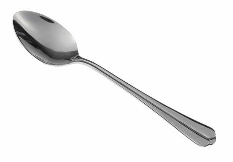

Case Study- Google Lens VS Mobilenet
GOOGLE LENSVS
Mobilenet
-
Test Image -

- Test Image -
-
Test Image -

- Test Image - 
Output On GOOGLE LENS - Balloon
Output On Mobilenet Model - Apples
Result -
GOOGLE LENS is more accurate
Output On GOOGLE LENS - Football
Output On Mobilenet Model - Computer Mouse
Result -
GOOGLE LENS is more accurate
Output On GOOGLE LENS - Phone Case
Output On Mobilenet Model - Mobile Phone
Result -
Mobilenet is more accurate
Output On GOOGLE LENS - Spoon
Output On Mobilenet Model - Ladle
Result -
GOOGLE LENS is more accurate
I have tested 4 images GOOGLE LENS have predicted 3 of them more accurately And Mobilenet was less accurately So according to my case study GOOGLE LENS is more Accurate
Developed By Ishanvi Sharma